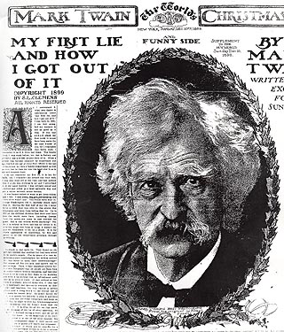

|  When
the New York World asked MT to write about his first
lie, they probably expected a humorous anecdote. What MT gave
them, however, is more typical of his late, pessimistic
philosophical writings than his early, exhuberant tall tales.
"All people are liars," he wrote, and offered as proof "the
lie of silent assertion" -- "For instance. It would not be possible for a humane and intelligent person to invent a rational excuse for slavery; yet you will remember that in the early days of the emancipation agitation in the North the agitators got but small help or countenance from any one. Argue and plead and pray as they might, they could not break the universal stillness that reigned, from pulpit and press all the way down to the bottom of society--the clammy stillness created and maintained by the lie of silent assertion--the silent assertion that there wasn't anything going on in which humane and intelligent people were interested." |